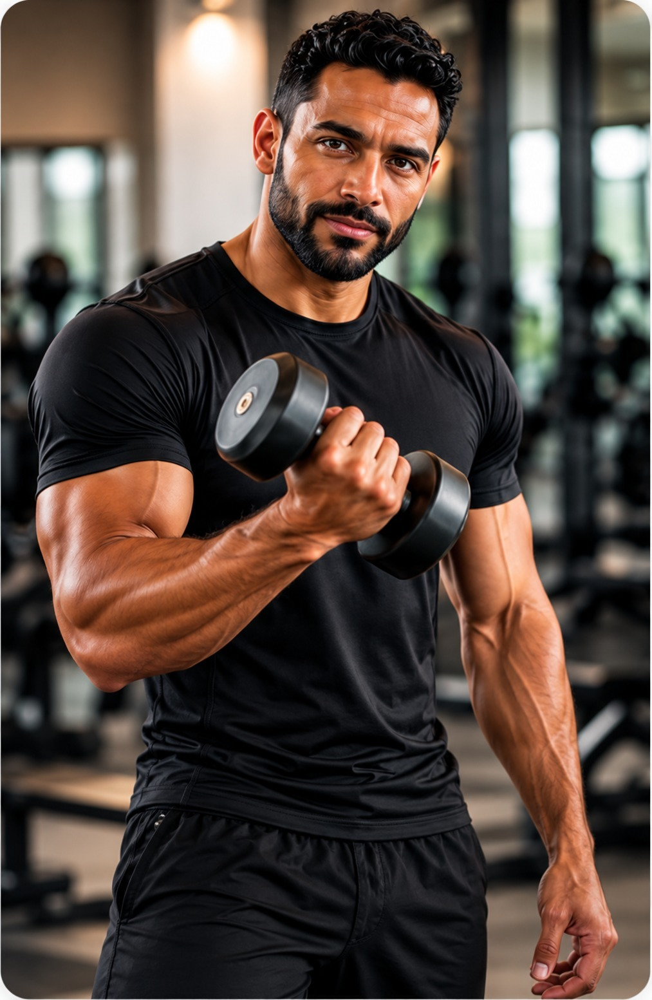
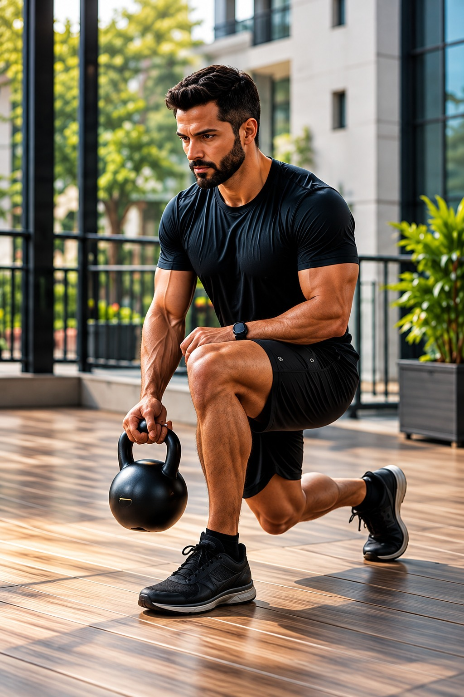
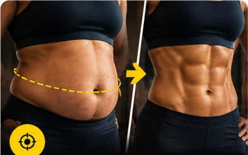
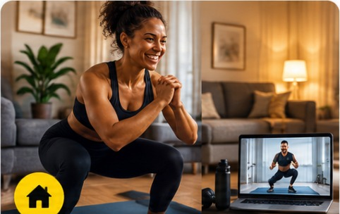

Adultos 30+Saúde, disposição e qualidade de vida
Saúde · Performance · Longevidade
Avaliação, treinamento personalizado e acompanhamento profissional para você viver com mais saúde, disposição e resultado.
Professor de Educação Física | CREF 054492-G/RJ
Sobre mim
Profissional de Educação Física, com formação em Licenciatura e Bacharelado e mais de 15 anos de atuação na área. Personal Trainer com experiência em treinamento personalizado, treinamento de força, treinamento funcional, condicionamento físico e promoção da saúde e qualidade de vida.
Especialista em Treinamento Funcional, com formação complementar em fisiologia do exercício, avaliação física, treinamento para diferentes faixas etárias e preparação para corrida.
Atua no planejamento e na prescrição individualizada de exercícios físicos, considerando os objetivos, o nível de condicionamento e as necessidades de cada aluno, com foco na evolução progressiva, na autonomia funcional e na qualidade de vida.
Conheça minha históriaUm processo completo, individualizado e baseado em evidências.
Bioimpedância, medidas, histórico e testes funcionais.
Prescrição individualizada com foco nos seus objetivos.
Sessões presenciais, online, condomínio ou academia.
App MFITPERSONAL, evolução e ajustes constantes.
Comparação de resultados e novos desafios.



Desafio 21 dias para mais força e definição.
Um programa voltado à redução da circunferência abdominal, melhora do condicionamento físico e fortalecimento do core. Além dos benefícios estéticos, a proposta é contribuir para a saúde metabólica e ajudar a reduzir fatores de risco associados ao excesso de gordura abdominal, como diabetes tipo 2, hipertensão arterial e doenças cardiovasculares.
Mais saúde, disposição e confiança para cuidar do seu corpo.

4 treinos semanais, de 20 a 30 minutos.
Sua rotina é corrida e falta tempo para frequentar uma academia? Com quatro sessões semanais de 20 a 30 minutos, você pode desenvolver força, resistência e condicionamento físico sem sair de casa.
Treinos planejados, orientação profissional e praticidade para manter sua saúde em movimento.
Seu tempo é precioso. Sua saúde também!
Mais autonomia e qualidade de vida.
Um programa de exercícios voltado à manutenção da capacidade funcional, fortalecimento muscular e preservação da saúde óssea. O treinamento regular pode contribuir para desacelerar a perda de massa óssea associada à osteopenia, combater a sarcopenia (perda de massa e força muscular) e melhorar o equilíbrio, ajudando a reduzir o risco de quedas.
Invista no seu presente e potencialize sua autonomia, saúde e qualidade de vida nos próximos anos.
Da base ao seu próximo desafio.
Saiba como está sua aptidão cardiorrespiratória por meio de avaliação e testes específicos, como o teste de esforço em esteira, quando indicado. Com base nos resultados, é possível orientar e ajustar seu treinamento, estabelecer metas e evoluir com mais segurança e planejamento.
Conheça seu nível de condicionamento. Supere suas próximas etapas com saúde!
Orientação, dedicação e treinamento individualizado: veja o que os alunos destacam sobre meu trabalho.
“Excelentes orientações sobre qual plano executar para diferentes objetivos, enfim, um grande profissional.”
“Em menos de 2 meses me condicionou e consegui realizar minha primeira corrida de 5km.”
“Beto é um ótimo profissional. Nunca gostei de academia, mas ele me dá a ajuda necessária para ir. Calmo, ótimas orientações e dedicado. Recomendo muito!”
“Excelente profissional, com várias especializações no currículo! Atendimento em alto nível, pra quem busca performance e rendimento no esporte, ou simplesmente pra quem busca ter mais qualidade de vida.”
Depoimentos reproduzidos a partir das avaliações fornecidas. Consulte o Google para acessar as publicações originais.
Dicas, orientações e informações baseadas em ciência para você treinar melhor e viver com mais saúde.
Ver todos os artigosDê o primeiro passo para uma vida mais saudável e ativa.